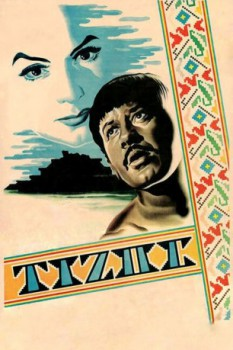

Tizoc (1957)


Indigenous Love

País:México, 109 minutos.
Idiomas:Español
GénerosDrama, Romántica
Director/es:Ismael Rodríguez
Guionistas:Manuel R. Ojeda, Carlos Orellana
Códec de vídeo:Unknown
Número: 3801
TomatoMeter:

--

--
Clasificación IMDb:


7.6/10 (749 votos)
Certificación:
Argumento:
An Indian arouses envy for his expertise in hunting animals without ruining their skins, for his wisdom and his kindness.
Reparto
María Félix (Como María), Pedro Infante (Como Tizoc), Andrés Soler (Como Fray Bernardo), Alicia del Lago (Como Machinza), Eduardo Fajardo (Como Arturo)
Medio: Archivo de video,
Localización: D:\PELICULAS\ACTORES\Pedro Infante\Pedro Infante Tizoc [700,19 Mb] (Pedro Infante)\Pedro Infante Tizoc.avi
Prestado: No
Rel. aspecto: Unknown